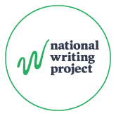

Home

Layering Reading, Writing and Discussion - Discussion
Badge

Issuer
Description
This micro-credential recognizes your engagement with the Layering Reading, Writing and Thinking module and your thoughtful reflection on the layering process.
Criteria
In your post to the Module 3 discussion, reflect on:
A part of the Layering Reading, Writing, and Discussion process you find especially powerful or promising
How you see layering supporting students as they work toward writing informed claims
One challenge or opportunity you imagine for your own learners and/or teaching context
Be sure to take a few minutes to respond to at least two other teachers’ posts to continue the conversation.